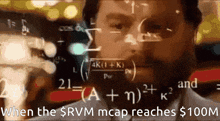

Общие положения.
- Цель — разогнать «СКР АТК» до 1000% и играть от проков теневого оружия.
- Не смешивать два подхода: крит-билд и билд через «ф. пробой».
- Стихия стрел важнее стихии оружия: Ammo element > Weapon element.
Скорость атаки
Максимальная «общая СКР АТК» в игре составляет 1000%. Вы можете на «СКР АТК» и увидеть процент, на который увеличивается «фин. СКР АТК». Его необходимо сложить с «фин. СКР АТК», чтобы получить итоговое значение.
Total final ASPD
| Общая фин. СКР АТК | Выстрелы в секунду |
|---|---|
| 180% | 1 |
| 360% | 2 |
| 540% | 3 |
| 720% | 4 |
| 900% | 5 |
| 1000% | 6 |
Перевод целочисленного значения в процентный
| СКР АТК | фин СКР АТК |
|---|---|
| 50 | 50% |
| 150 | 100% |
| 300 | 150% |
| 500 | 200% |
| 750 | 250% |
| 1050 | 300% |
| 1400 | 350% |
| 1800 | 400% |
| 2250 | 450% |
| 2750 | 500% |
| 3300 | 550% |
Карта даёт 120 «СКР АТК», что после 500 соответствует примерно 24% «фин. СКР АТК», тогда как карта сразу добавляет 30%.
Немного про Крит.
Crit
| Крит | фин Крит |
|---|---|
| 25 | 5% |
| 75 | 10% |
| 150 | 15% |
| 250 | 20% |
| 375 | 25% |
| 525 | 30% |
| 700 | 35% |
| 900 | 40% |
| 1125 | 45% |
| 1650 | 55% |
| 1950 | 60% |
| 2275 | 65% |
| 2625 | 70% |
| 3000 | 75% |
| 3400 | 80% |
| 3825 | 85% |
| 4275 | 90% |
| 4750 | 95% |
| 5250 | 100% |
Из этого следует, что карта даёт 120 «крита», что составляет около 4,8% при значении параметра выше 250, в то время как карта сразу добавляет 6%.
Ключевая механика заключается в том, что крит игнорирует физическую защиту, но не игнорирует уклонение. Параметр «удар» компенсируется высокой «СКР АТК».
Стихийные атрибуты.
У Хантера есть , которые меняют атрибут автоатаки. Однако также можно использовать , меняющие стихию самого оружия. Важно помнить: Ammo element > Weapon element. Это означает, что если активен свиток воды, но используются огненные стрелы, урон будет огненным.
В среднем за один час фарма расходуется около 14 440 стрел, что соответствует примерно 1 440 единицам веса. Поэтому для AFK-фарма выгоднее использовать свитки (они стакаются до 12 часов), а для MVP и mini-боссов — стрелы.
Наглядная разница на который имеет рассу “Нежить”, а значит уязвим к огню.
Итог
Исходя из базовых принципов, можно выделить два разных билда, которые не следует смешивать:
1) через крит;
2) через физический пробой.
Физ. пробой
Основу билда составляют навыки теневого оружия с проком и , а также высокая скорость атаки в турельном режиме. Наша основная цель — достичь 1000% «СКР АТК», 4–5 уровня теневого лука и «ф. пробоя», достаточного для игнорирования защиты MVP. Так же мы убираем с панели все активные навыки для PvE и оставляем для PvP — панель в итоге выглядит .
Основные формулы урона

Базовый урон = Ф.АТК×(1 + Ф.пробой − Ф.ЗАЩ)
Бонус Ф.УРН - чистое значение которое прибавляется без рассчета защиты цели
Финальный бонус Ф.УРН - финальный мультипликтор ко всему физ.урону что у нас есть.
Упрощенно:
Финальный урон = Базовый урон ×(1 + Финальный бонус Ф.УРН)+ Бонус Ф.УРН.
Ф.АТК = 5000
Ф.пробой − Ф.ЗАЩ = 0
Бонус Ф.УРН = 300
Финальный бонус Ф.УРН = 20%
Тогда: База от атаки: 5000 × 1 = 5000
Базовый урон: 5000 × 1 = 5000
Умножаем на финал.бонус: 5000 × 1.2 = 6000
Добавляем "плоский" урон: 6000 + 240 = 6240
Если вместо +300 P.DMG Bonus взять +6% Final P.DMG: (5000)×1.26=6300
видно, что в лейте % обычно сильнее, чем flat
Показать формулу урона
Экипировка
Я не буду подробно разбирать здесь оранжевую экипировку или варианты вида «обязательно нужно именно это». Используйте аксессуары и чары, чтобы добрать недостающие параметры. В зависимости от ситуации может потребоваться усилить , или .
Питомцы
Для билда нам необходим . Использование других питомцев (например, Йо-йо) приводит к заметной просадке по DPS. Для Вокала обязательно нужно получить навык , который даёт значительный бонус к «СКР АТК» (примерно +1100 в чистом значении). Также рекомендуется роллить у питомца следующие характеристики: и . В сумме это даёт около 6,2% к мультипликатору наносимого урона.